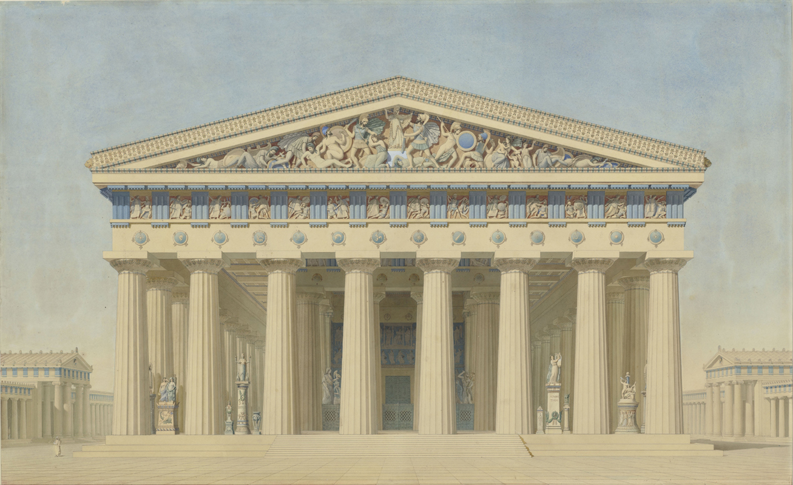

Архитектурный стиль — это набор особенностей зданий, благодаря которым можно определить дух эпохи и понять, чем жили люди сотни веков назад. Каждому направлению соответствуют определённые черты, связанные с периодом истории и конкретным местом. В этом материале расскажем об основных архитектурных стилях:
Когда и где появился. Существовал с VII века до н. э. до I века н. э. на территории современной Греции, а также на юге Италии и в Турции.
Особенности. В основе архитектуры Древней Греции лежит система ордеров — тип композиции из вертикальных и горизонтальных элементов, расположенных в определённом порядке. Принято выделять три вида ордера: дорический, ионический и коринфский. Они отличаются друг от друга декором и сложностью композиции. Например, дорический полностью лишён декоративных элементов, а коринфский предусматривает необычную капитель (верхняя часть колонны) — обычно её украшали орнаментом в виде листьев аканта.
Главными сооружениями древнегреческой архитектуры считаются храмы. Постройки были масштабными, но архитекторам удавалось сохранять гармонию и не нарушать пропорции. Древние греки придумали и создали портик с фронтоном (выступ здания с рядом колонн), колонны с капителями, стереобат (обычно трёхступенчатое основание колонн), а также кариатиды — статуи женщин в задрапированной одежде, которые чаще всего заменяли колонны и служили опорой для антаблемента. В качестве основных материалов архитекторы использовали мрамор и известняк.
Пример. Парфенон в афинском Акрополе.
Когда и где появился. Зародился во Франции, был популярен в Западной Европе с конца XII по XVI век.
Особенности. Этот архитектурный стиль — полная противоположность романскому. В противовес массивным и брутальным храмам готические соборы устремились вверх — вертикаль сменила горизонталь. Фасады стали легче, в них появилось больше «воздуха». Конструкции делали похожими на каменное кружево.
Главной особенностью готического стиля стали каменные арки — аркбутаны. В зданиях отказались от несущих стен, а весь вес приходился на элементы, которые обычно располагались не внутри здания, а снаружи.
Пример. Нотр-Дам-де-Пари.
Когда и где появился. Охватывает период с начала XV столетия до начала XVII века. Был распространён в Западной Европе, прежде всего в Италии.
Особенности. Название стиля соответствовало духу времени — искусство возвращалось к идеалам античности. После относительно бунтарской готики идеалами для строителей вновь стали симметрия, правильные пропорции и изысканность. Архитекторы взяли за основу классические колонны, арки, крестово-купольную систему, однако постройки, по сравнению с античными, стали более светскими и в некотором смысле городскими.
Здания украшали колоннами с декорированными капителями, на фасадах размещали человеческие статуи, а не демонические фигуры. Главным типом строений считались палаццо — городские дворцы. В качестве основных материалов использовали обработанный камень с гладкой поверхностью и светлый кирпич с добавлением известкового раствора.
Пример. Собор Санта-Мария-дель-Фьоре во Флоренции.
Когда и где появился. В 1710-е годы во Франции, а затем и в других странах Европы.
Особенности. Этот архитектурный стиль возник как ответная реакция на слишком богато украшенные сооружения барокко, хотя на первый взгляд между этими стилями есть много общего. Однако в основе рококо лежит идея изысканности и утончённости. Архитекторы по-прежнему украшали здания обильным декором. Основным был рокайль — элемент орнамента, стилизованный под морские раковины и камешки. В качестве главных цветов отделки выбирали пастельные или по меньшей мере не слишком броские.
Также к оссобенностям рококо относят:
Рококо преобладал в интерьере, однако есть и здания, фасады которых выполнены в этом стиле. В интерьерах применялось дерево, из которого преимущественно делали мебель, а также мрамор и хрусталь.
Пример. Екатеринский дворец.
| Название | Архитектор | Стиль | Примечание |
| Петропавловский собор (1713-1733 гг.) в СПб | Д. Трезини | Петровское барокко | Трезини - основатель европейской архитектурной традиции в России. Построил также здание 12 коллегий. Петропавловский собор - усыпальница российских императоров с Петра. |
| Зимний дворец в СПб (1754-1762 гг.) | Б. Растрелли | Елизаветинское барокко | Официальная зимняя резиденция российских императоров. В Зимнем помещается Эрмитаж (начало коллекции положила Екатерина II). В 1917 году в здании размещалось Временное правительство. |
| Дом Пашкова в Москве (1784-1786 гг.) | В. Баженов | Классицизм | Государственная библиотека им.Ленина, Баженов также построил Царицино (Москва) и Михайловский замок, проект Большого кремлевского дворца. |
| Памятник Петру I "Медный всадник" | Э. Фальконе, по приказу Екатерины II | Классицизм | На Сенатской площади - место восстания декабристов в 1825 году, поэма Пушкина "Медный всадник". |